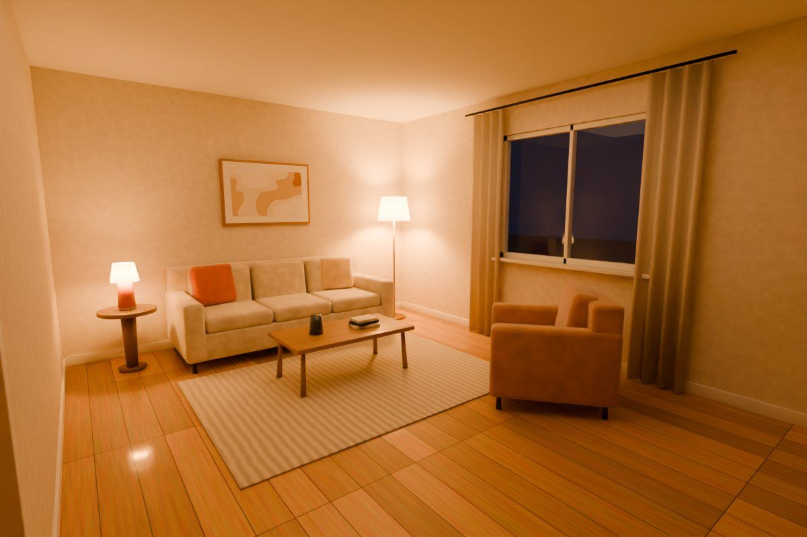

Makon
JavaScript · three.js · Vercel Functions · FLUX.2 / OpenAI images · IndexedDB
An AI studio that takes one photo of a room and carries it all the way to a measured plan, a 3D model, a furniture list and a build brief.
1. Context
Makon means “a place to live.” It is a web studio for redesigning a room: you photograph one room, and Makon keeps its walls, windows and light while redesigning what sits inside.
It doesn't stop at the picture. The same project becomes a measured floor plan, a lit 3D room, a furniture schedule with real sizes and prices, and a brief you can print and hand to whoever is doing the work.
2. Problem and Objective
An AI render on its own is just a picture. It looks good, but it doesn't tell you how many litres of paint to buy, whether the sofa fits, or whether you can still open the door.
Makon was built to close that gap:
- Keep the real room (walls, windows, daylight) and only change what you choose
- Turn the idea into measurements, quantities and a budget
- Work for anyone, even with no AI key connected at all
3. How It Works
One project moves through five tools. Each one hands its result to the next.


Build brief Living room
- Checklist
- Before / after
- Materials
- Plan & wall table
- Quantities
- Furniture schedule
- Budget
Print / PDF · copy · .txt · project file
Design takes a photo (upload, camera, paste or the sample), applies one of 10 styles and renders it with AI, or makes an instant mood preview on the device.
Plan is a 2D editor: draw walls with snapping, place doors and windows, calibrate from one measured wall, and read area and perimeter.
3D turns the plan into a lit room with real openings, glass and floor textures. The sun follows the daylight direction you set.
Furnish adds 46 pieces at real sizes. New pieces find free space, and every move is checked against walls, doors and walkways.
Build writes the brief live: checklist, materials, quantities (paint, flooring with waste, skirting), furniture schedule and a budget bar that warns on overspend.
4. Keep the Room, Change the Style
The redesign has to look like your room. So you choose what stays exactly as it is: the window plane, doors and archways, floor, ceiling and lights, wall colour, built-in units, radiators or the furniture layout. You also set how strong the change is and which way the daylight comes from.
 before
after
before
after
Each style is more than a filter. It carries a palette for the on-device preview, finishes for the 3D room and a materials list for the brief. Pick one:
Renders are kept as a version history (up to 24), and you can refine one in plain words (“make the rug lighter”) with undo. The palette is extracted from every render, with copyable colour codes.
5. Plan, 3D and Fit Checks
The floor plan is where the idea becomes real. Rooms start from a rectangle or L-shape, or you draw the walls yourself with vertex, right-angle and alignment snapping. Measure one wall with a tape and the whole plan calibrates to it, in metric or imperial.
Furniture is checked as you place it: through a wall, outside the room, overlapping, blocking a door swing, or leaving a walkway under 60 cm. Try the walkway rule:
In 3D, the plan becomes a room with real wall openings, glass, doors, skirting and plank or tile floors. There are perspective, top, front, side and eye-level cameras, walls cut away so you can see in, and shadows from a sun that follows the daylight direction.

6. System Architecture
Makon is a static site with one serverless function. Almost everything runs in the browser as plain JavaScript modules, with no framework and no build step.
Browser · Studio
design.js engine.js plan.js scene3d.js three.js r160 furnish.js build.js store.jsVercel
/api/redesign serverless, up to 120 sProviders
Cloudflare Workers AI FLUX.2 Klein · free OpenAI gpt-image · paid Upstash Redis daily limits · optionalOn the device
IndexedDB autosave localStorage accounts Print · PDF · .txt exportsThe photo never has to leave the device. engine.js makes an instant mood preview with real Lab colour transfer toward the style's palette.
For a real render, design.js calls /api/redesign, which picks the connected provider, checks the visitor's daily limit and returns the image.
The plan, the 3D scene and the furniture all share one room model, so moving a sofa in 3D moves it on the plan too.
Projects autosave to IndexedDB, and build.js turns them into a printable brief. Whole projects export and import as files.
7. Engineering Decisions
Most of the work went into making it dependable for people I'll never meet.
- Works with no key. Without an AI provider, Design still makes on-device previews, so the demo never breaks
- A free path and a paid path. Cloudflare Workers AI (about 100 renders a day, free) or OpenAI for higher quality. If both are set, OpenAI is used
- Fair limits. Each visitor gets 5 AI renders a day by default, and failed renders don't count. Upstash Redis makes the limit exact, an owner code skips it, and an optional access code locks rendering to people I share it with
- Errors without secrets. Provider errors are made readable without ever echoing key text back to the browser
- No CDN dependency. three.js is bundled and served with long-lived immutable caching
- Data stays local, but swappable. Accounts and storage live behind two small modules, so a backend like Supabase can replace them without touching the rest
8. What This Project Demonstrates
Makon is product engineering end to end: an AI pipeline with a graceful fallback, a geometry-aware 2D editor, a real-time 3D scene, and the unglamorous parts that make a tool usable, like undo, autosave, exports, limits and a phone layout with a bottom tab bar.